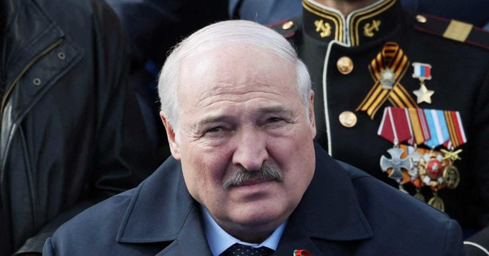

Belarus leader Lukashenko absence at ceremony sparks health speculationBelarusian President Alexander Lukashenko, who has not been seen in public since Tuesday, did not appear on Sunday at a ceremony in the capital, Minsk, triggering speculation that the veteran leader is seriously ill. The BelTA state news agency reported that Prime Minister Roman Golovchenko read a message from Lukashenko during an annual ceremony at which young people swear allegiance to the ex-Soviet state’s flag. The agency gave no reason for Lukashenko’s absence five days after he appeared unwell and skipped parts of commemorations in Moscow marking the Soviet Union’s World War Two victory over Germany. Lukashenko also did not speak at an event in Minsk marking the anniversary for the first time in his long presidency. That event was the last time he was seen in public. Lukashenko’s office has declined to comment. According to the opposition news outlet Euroradio, Lukashenko was taken to an elite Minsk clinic on Saturday. A Russian online publication, Podyom, quoted a senior member of the Duma lower house of parliament, Konstantin Zatulin, as saying that “(Lukashenko) has simply fallen ill ... and probably needs a rest.” Russia’s daily Kommersant also published a story about Lukashenko’s health, citing Zatulin and Belarusian opposition media. Russian media rarely publish stories about the health of the leaders of Russia or its allied neighbors. Lukashenko, 68, has led Belarus since 1994, using police to put down protests, while courts closed dissident media outlets and imposed long jail terms on opponents, and activists fled the country en masse. Lukashenko received backing from Kremlin leader Vladimir Putin in squashing protests, and last year he allowed his country’s territory to be used as part of Russia’s invasion of Ukraine. Russia calls the invasion a “special operation.” Belarus’ foreign minister, Sergei Aleinik, is expected on Monday to start this three-day visit to Moscow, Russia’s foreign ministry said last week. |
 |